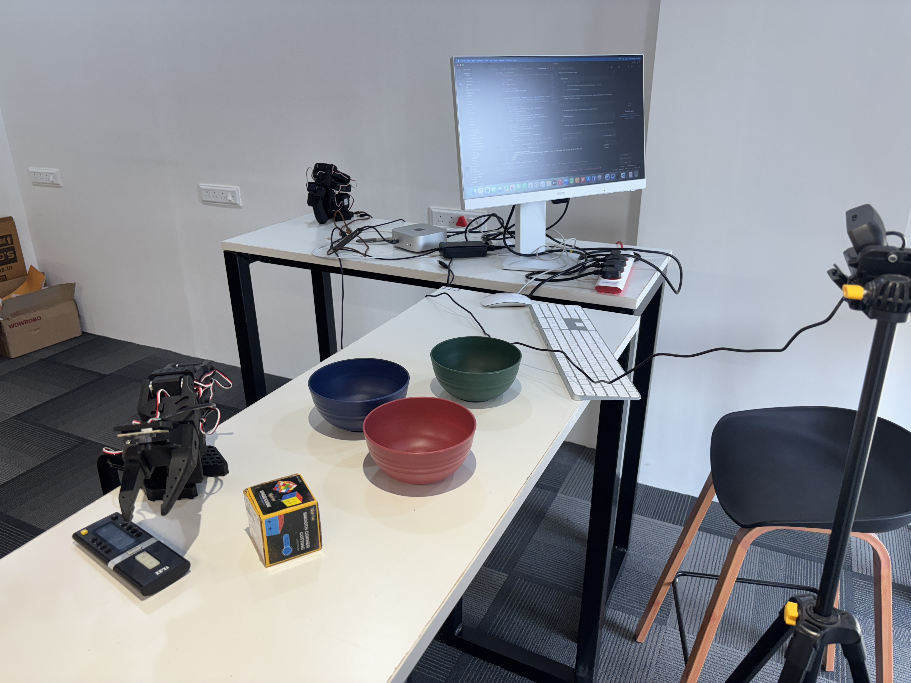
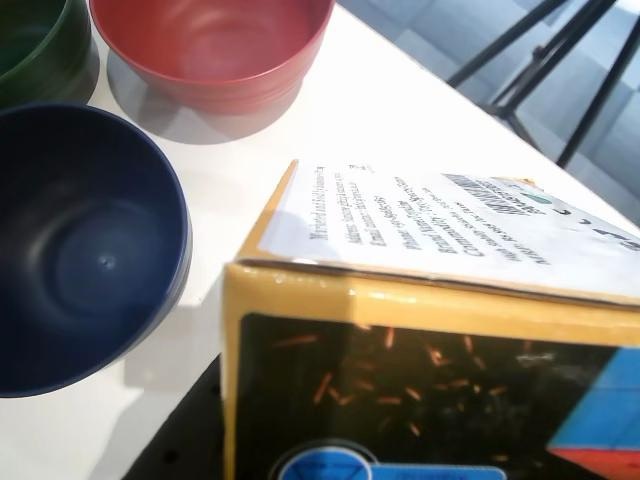
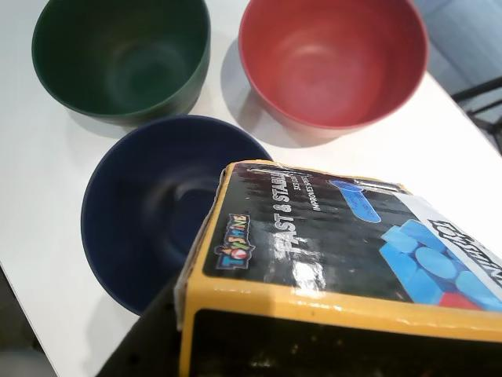
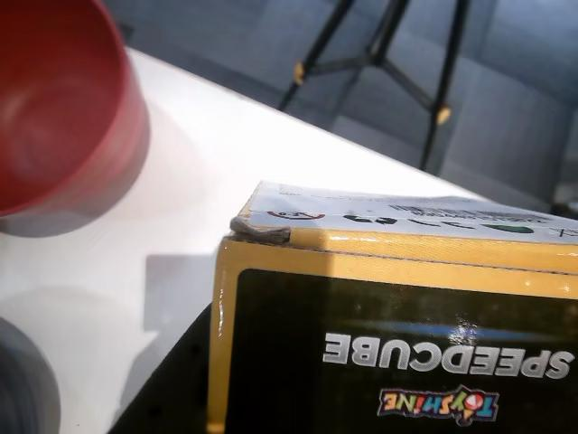

Teaching a robot arm to pick up a box and place it in the right bowl — using nothing but camera images and natural language instructions.

Overview
This project implements SmolVLA (a compact Vision-Language-Action model) on a real SO-101 6-DOF robotic arm to perform language-conditioned pick-and-place.
The robot learns to pick up a box and place it in one of three colored bowls (red, green, blue) based on natural language instructions. SmolVLA's VLM backbone semantically grounds language — "the ocean-colored bowl" maps to blue, "the grassy bowl" maps to green.
We extended this with voice control (Whisper STT), intent classification (sentence-transformers), and an experimental RL fine-tuning pipeline (RLT).

Camera images + natural language → joint positions. The model sees, reads, and acts.
Speak new instructions while the robot runs. Whisper STT + live task switching, no restarts.
Deployed on a real SO-101 arm with dual cameras. Train in the cloud, run locally on Mac M4 Pro.
The Task


Given a natural language instruction, the robot must: visually locate the box, grasp it, lift and transport it, then place it into the correct colored bowl and release.
SmolVLA doesn't just match keywords — it understands meaning:
| What You Say | What the Robot Does |
|---|---|
| "Place it in the blue bowl" | Picks box → blue bowl (literal) |
| "Put it in the bowl colored like the ocean" | Picks box → blue bowl (semantic) |
| "Move it to the grass-colored bowl" | Picks box → green bowl (semantic) |
| "The bowl that looks like blood" | Picks box → red bowl (semantic) |
| "The sky-colored bowl" | Picks box → blue bowl (semantic) |
| "The emerald one" | Picks box → green bowl (semantic) |
Hardware
| Spec | Detail |
|---|---|
| DOF | 6 (5 arm + 1 gripper) |
| Joints | shoulder_pan, shoulder_lift, elbow_flex, wrist_flex, wrist_roll |
| Gripper | Parallel jaw, 2 coupled fingers |
| Actuators | Feetech STS3215 serial bus servos |
| Control | 30 Hz position control via USB serial |
| Camera | Name | Resolution | Purpose |
|---|---|---|---|
| Overhead Webcam | webcam (index 0) | 640x480 @ 30fps | Bird's-eye view of workspace |
| Wrist Camera | arm_cam (index 1) | 640x480 @ 30fps | Close-up from robot's wrist |
webcam / arm_cam, but SmolVLA expects
camera1 / camera2. A rename map handles this during both training and inference.
An identical SO-101 arm serves as the leader for human demonstrations. The human moves the leader, and the follower mirrors in real time at 30 Hz.
| Stage | Hardware | Detail |
|---|---|---|
| Data Collection & Inference | Mac M4 Pro | MPS GPU, real-time forward pass |
| Training | RunPod A100 80GB | batch=64, ~2 hrs for 30K steps |
| Training (alt) | RunPod A40 48GB | batch=32, ~3.5 hrs |
Software
Compact Vision-Language-Action model. Takes camera images + language → outputs 50-step action chunks (joint positions).
HuggingFace's robotics framework. Unified interface for robot control, data collection, training, and deployment.
OpenAI's speech-to-text. Runs locally, continuously listening for new voice instructions in a background thread.
Semantic similarity matching. Maps free-form voice commands to canonical task strings. Handles paraphrases.
Hosts datasets and models. Train in the cloud, deploy locally. Seamless handoff via from_pretrained().
Pipeline
Step 1
We collected ~45 teleoperation episodes across 3 bowl colors using
lerobot-record. A human moves the leader arm, the follower mirrors the motion,
and both camera streams + joint positions are recorded at 30 Hz.
| Parameter | Value |
|---|---|
| Episodes per color | 15 |
| Total episodes | ~45 |
| Episode duration | 60 seconds max |
| FPS | 30 Hz |
| Cameras | 2 (overhead + wrist) |
# Record 15 episodes for each bowl color:
./record_box_to_bowl.sh red # Creates dataset
./record_box_to_bowl.sh green # Appends (--resume=true)
./record_box_to_bowl.sh blue # Appends (--resume=true){
"observation.state": [6 floats] // shoulder_pan ... gripper
"observation.images.webcam": [480x640x3] // overhead camera
"observation.images.arm_cam": [480x640x3] // wrist camera
"action": [6 floats] // leader arm positions (target)
"task": string // "Pick up the box and place it in the {color} bowl"
}Step 2
Fine-tuning adapts the pretrained lerobot/smolvla_base model on our custom dataset.
The VLM backbone retains its language understanding; only the action head learns our robot's joint space.
# Setup on RunPod (run once):
apt-get update && apt-get install -y ffmpeg
pip install "lerobot[smolvla]"
huggingface-cli login --token $HF_TOKEN
# Train:
lerobot-train \
--policy.path=lerobot/smolvla_base \
--policy.repo_id="RajatDandekar/smolvla_box_to_bowl" \
--policy.device=cuda \
--policy.use_amp=true \
--dataset.repo_id="RajatDandekar/so101_box_to_bowl" \
--batch_size=64 --steps=30000 --num_workers=8 \
--save_freq=5000 --log_freq=50 \
--rename_map='{"observation.images.webcam": "observation.images.camera1",
"observation.images.arm_cam": "observation.images.camera2"}'Step 3
The trained model deploys on Mac M4 Pro using MPS acceleration. The robot runs at 30 Hz, taking camera images and outputting action chunks of 50 steps.
The model predicts 50 future joint positions at once. These are queued and executed one per control step. Only when the queue empties does the model run again. This produces smooth, continuous motion.
sample_actions() every control step and using action[0] generates a
new 50-step trajectory every 33ms. The robot always jumps to the start of a new trajectory —
causing violent jerking. Use predict_action() from lerobot.utils.control_utils.
Voice
A background thread continuously listens via Whisper STT. When you speak a new instruction, the robot's behavior changes on the very next control step — no stopping, no episode boundaries.
The robot runs autonomously for up to 60 minutes. Just speak to redirect it.
# Voice mode
python voice_inference.py
# Text mode (keyboard)
python voice_inference.py --text_mode
# Custom initial task
python voice_inference.py \
--initial_task "Pick up the box \
and place it in the red bowl"Intent
For robust voice control, we map free-form transcripts to canonical task strings using sentence-transformers semantic similarity. This ensures the exact training-time task string reaches SmolVLA, even from noisy speech.
Advanced
Beyond imitation learning, we implemented the RLT approach: using SmolVLA's frozen embeddings as features for an RL actor-critic that handles precision phases (grasping, exact placement) where the base VLA struggles.
| Metric | Value |
|---|---|
| Stage 1 encoder loss | 0.707 (converged) |
| Stage 2 episodes | 20 (5 warmup + 15 training) |
| RL updates | 630 |
| Replay buffer | 326 transitions (94 from human intervention) |
| Actor status | Not yet converged (needs gradient clipping + more episodes) |
Debugging
Integrating SmolVLA with real hardware involved solving these non-obvious bugs. Documented for anyone attempting similar work.
sorted() on joint names produces alphabetical order, but the model
was trained with motor-definition order. Per-element normalization applies to the wrong joints →
garbage model input → erratic motion.JOINT_NAMES order.
sample_actions() every step generates a new trajectory each 33ms. Robot always
jumps to the start → violent jerking.predict_action() from lerobot.utils.control_utils.
.to(device).float() converts the model to float32, changing numerical behavior and producing wrong outputs..to(device) — no .float().
SmolVLAPolicy.from_pretrained() doesn't set input_features/output_features.PolicyFeature.
PolicyProcessorPipeline.from_pretrained().
webcam/arm_cam don't match policy expectation camera1/camera2.--steps_per_episode 1500
NormalizationMode enum blocked by weights_only=True.torch.serialization.add_safe_globals([NormalizationMode])
so_follower, not so101_follower. Check import paths carefully.
predict_action() from lerobot.utils.control_utils — the exact
same function lerobot-record uses. Don't reimplement the pipeline.
Takeaways
Training with literal colors generalizes to metaphors ("ocean" → blue). VLM pre-training delivers.
With SmolVLA's pretrained backbone, ~45 demos sufficed for reliable 3-target pick-and-place.
2 hrs on A100, deploy on M4 Pro. HuggingFace Hub makes the handoff seamless.
Silent corruption with no error message. Alphabetical vs. motor order — the most destructive bug.
The difference between smooth and violent jerking is one function call: predict_action().
Without exact preprocessor/postprocessor from the checkpoint, actions are meaningless numbers.
Actor-critic needs careful gradient clipping. Critic loss exploded to trillions without it.
predict_action(). There are dozens of subtle details you'll get wrong.See It In Action
Reproduce
git clone https://github.com/huggingface/lerobot.git
cd lerobot && pip install -e ".[smolvla]"
pip install openai-whisper sounddevice sentence-transformerslerobot-find-port
lerobot-calibrate --robot.type=so101_follower --robot.port=PORT --robot.id=my_follower
lerobot-calibrate --teleop.type=so101_leader --teleop.port=PORT --teleop.id=my_leader./record_box_to_bowl.sh red # 15 episodes (creates dataset)
./record_box_to_bowl.sh green # 15 episodes (appends)
./record_box_to_bowl.sh blue # 15 episodes (appends)bash train_smolvla_box_bowl_runpod.sh./run_inference.sh # Autonomous mode
python voice_inference.py # Voice control
python intent_inference.py # Intent classification| Resource | Repo ID |
|---|---|
| Training dataset | RajatDandekar/so101_box_to_bowl |
| Trained model | RajatDandekar/smolvla_box_to_bowl |
| Base model | lerobot/smolvla_base |
Robotics/
+-- lerobot/ # LeRobot framework (vendored)
| +-- src/lerobot/
| +-- policies/smolvla/ # SmolVLA policy
| +-- robots/so_follower/ # SO-101 driver
| +-- utils/control_utils.py # predict_action()
+-- scripts/ # RLT training & inference
+-- voice_inference.py # Voice-controlled SmolVLA
+-- intent_inference.py # Intent classification
+-- recordings/ # 47+ demo videos
+-- docs/ # This webpage
+-- *.sh # Shell scripts for all operations